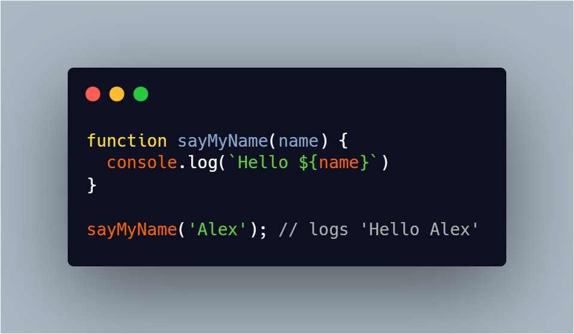
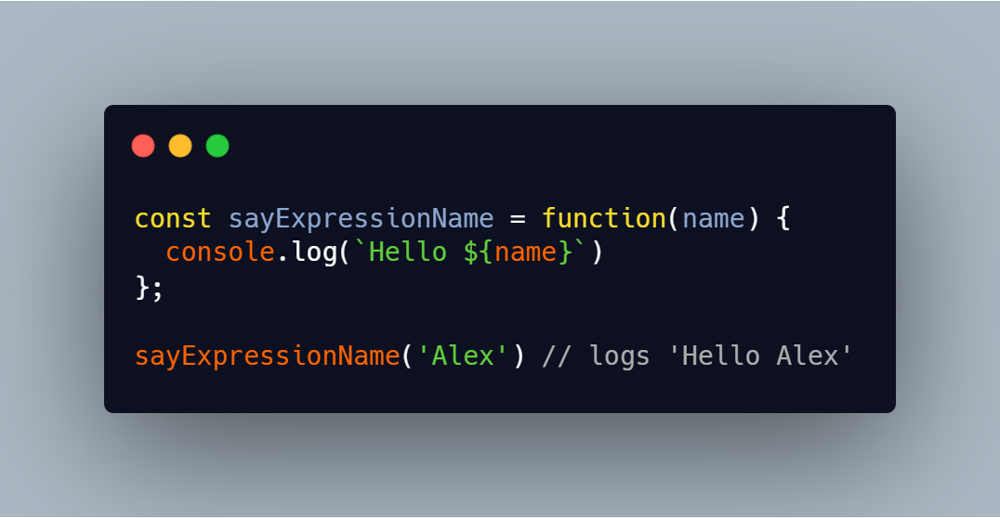
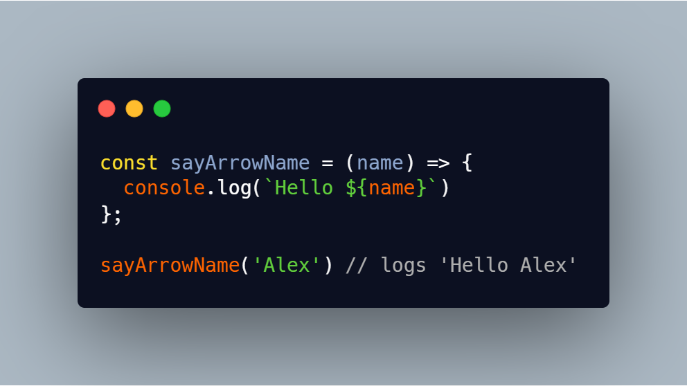
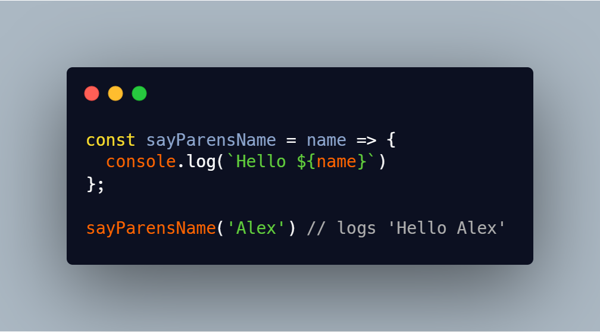
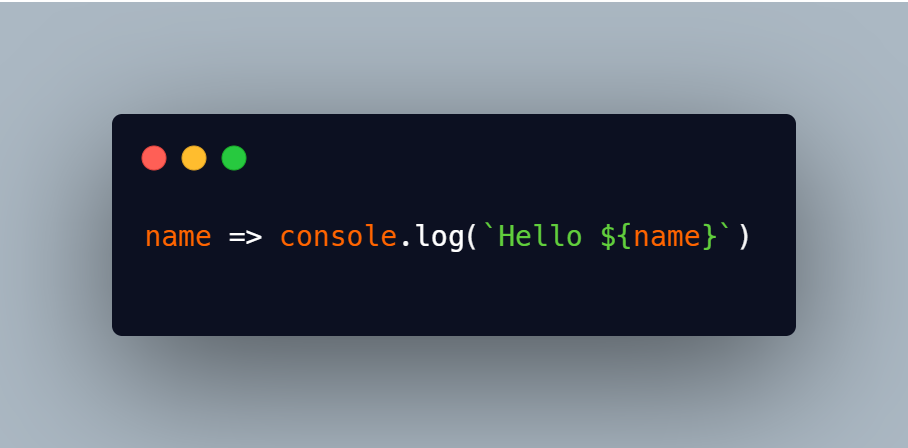
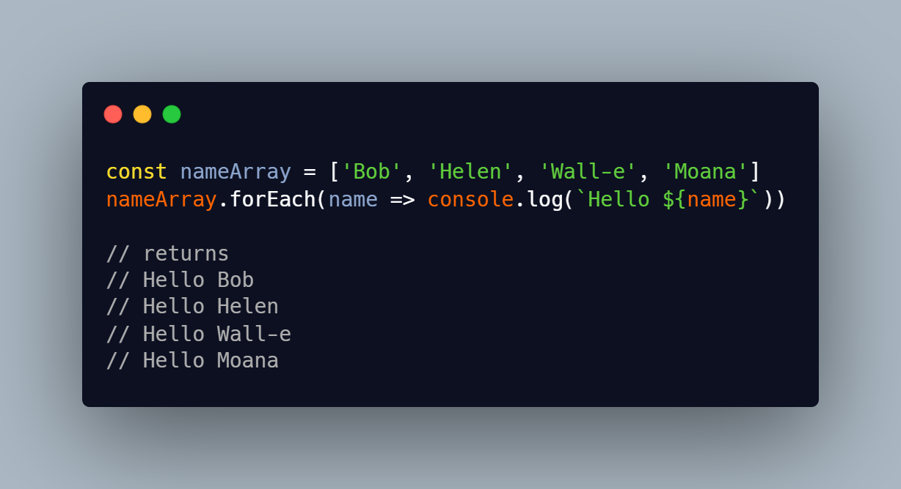
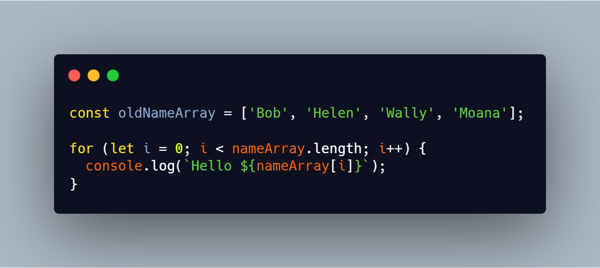

This is NOT a definitive guide to arrow functions. I'm writing a few other tutorials and blogs and want to have something to point people to so they can have a quick explanation and example of arrow functions since they are in so many of the modern frameworks. Just enough to be dangerous! To be clear, there are reasons where you should not use arrow functions, but they are not going to be discussed in this blog post. I just want you to be able to know how they work when you see them "in the wild".
Let's get started. I'm going to take you step by step converting a regular function into an arrow function.
Here's a regular function using the function keyword
Let's change that to an anonymous function expression
Should be nothing new here so far. No Arrows or ES6 yet, but here it comes...
First remove the function keyword and add the arrow
The only thing going on there is removing the function keyword and adding the arrow. And that's it! You've gone and made an arrow function! Hurray! But wait, there's more!
If there is only one argument, you can get rid of the parentheses around it.
Getting pretty lean but we can take it even further. If the body of the code is only one line, we can get rid of the curly braces.

Frequently, you'll see these used as a callback in another function so there is no const and no function name. This is the case that we see quite a bit and the real reason I wrote this all up in the first place
This doesn't do anything on it's own, but as a callback it's useful
I think that covers the basics. Again this is not mean to be the definitive guide, just an intro to figure out what they mean because we see them 'in the wild' in all the modern frameworks.
As a comparison, here's a regular old for loop. Sure, we understand this as programmers, but the arrow function just reads like a sentence in normal language. So much easier to understand!
